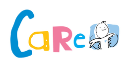

CARE Therapist Portal
The Portal isn't connected to its Supabase project yet.
Admin: fill in web/js/config.js — see docs/SUPABASE_SETUP.md, step 6.
The Portal isn't connected to its Supabase project yet.
Admin: fill in web/js/config.js — see docs/SUPABASE_SETUP.md, step 6.
Loading…

Sign in to the CARE Therapist Portal.
You're signed in as , but this login isn't linked to a staff record yet (or the record is closed).
Please ask an admin to add you using this exact email.
Your data is safe — nothing was changed. Check your connection and try again.